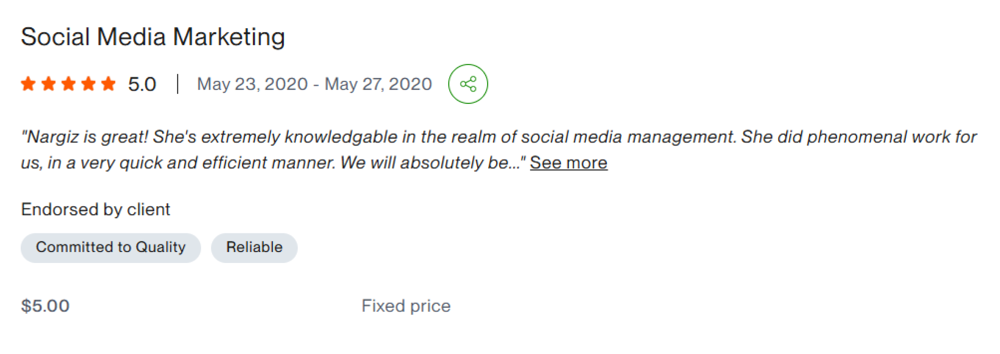
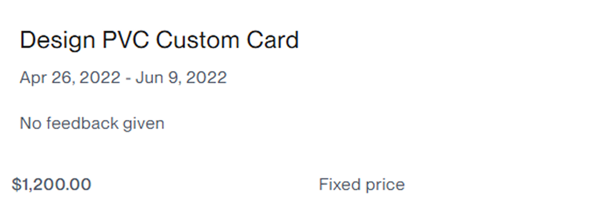

ՁԱՅՆԱԳՐՎԱԾ ONLINE ԴԱՍԸՆԹԱՑ
UPWORK
FREELANCER
0-ից մինչև առաջին Client
Կառուցիր համակարգ, որը կօգնի քեզ գտնել միջազգային Client-ներ և դարձնել մասնագիտությունդ freelance կարիերա։
Գրանցվել դասընթացին ↗SKILL
GOES
GLOBAL
01 · ՈՒՄ ՀԱՄԱՐ Է
Ո՞ւմ համար է
այս դասընթացը
Եթե ունես մասնագիտություն, որը կարող ես վաճառել օնլայն, Upwork-ը կարող է դառնալ քո հաջորդ աշխատանքային հարթակը։
Դասընթացը նախատեսված է սկսնակ և զարգացող մասնագետների համար՝
Պետք չէ լինել միայն դիզայներ կամ ծրագրավորող։
Եթե ունես մասնագիտություն, հմտություն կամ փորձ, որը արժեք է ստեղծում բիզնեսի համար հեռավար ձևաչափով, կարող ես կառուցել քո freelance ճանապարհը։
02 · ՔՈ ԱՐԴՅՈՒՆՔԸ
Ստեղծիր ոչ միայն
Upwork-ի պրոֆիլ,
այլ համակարգ։
03 · ԴԱՍԸՆԹԱՑԻ ԾՐԱԳԻՐ
6 մոդուլ՝ մեկ ամբողջական
freelance ճանապարհ
Յուրաքանչյուր մոդուլ կառուցված է այնպես, որ սովորածդ անմիջապես կիրառես իրական freelance աշխատանքում։
04 · ԴԱՍԸՆԹԱՑԻ ՁԵՎԱՉԱՓԸ
6 շաբաթ՝ սովորելու,
կիրառելու և կառուցելու համար։
Ամեն ինչ՝ հստակ ռիթմով, կիրառելի նյութերով և քեզ ուղղորդող աջակցությամբ։
05 · ԲՈՆՈՒՍՆԵՐ
Ավելին, քան
միայն դասեր։
Դասընթացից բացի՝ ստանում ես գործիքներ, որոնք կօգնեն քեզ freelance ճանապարհի ընթացքում։
06 · ՔՈ ԴԱՍԸՆԹԱՑԱՎԱՐԸ
Freelance-ի իրական փորձ,
որը փոխանցում եմ քեզ։


ՀԱՏՈՒԿ ՆԱԽԱՎԱՃԱՌՔԻ ԳԻՆ
69,000 ֏
49,000 ֏
Մինչև սեպտեմբերի 1-ը
Մեկնարկ՝ սեպտեմբերի 18
07 · ՀԱՃԱԽ ՏՐՎՈՂ ՀԱՐՑԵՐ